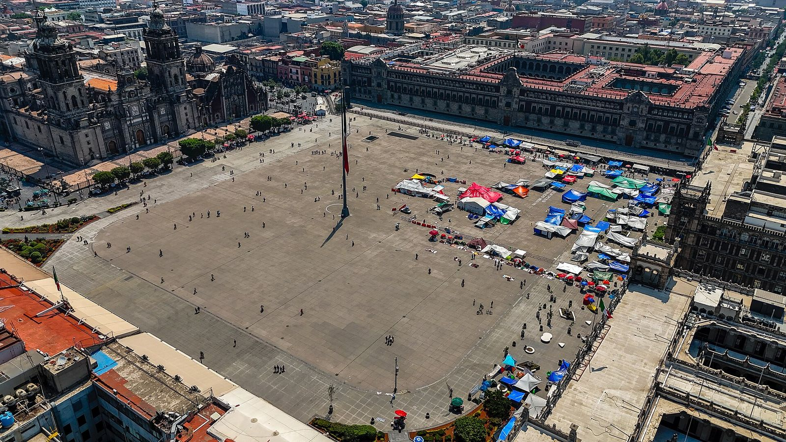

Un pedestal sin estatua
En el siglo XIX se proyectó un monumento a la Independencia en el centro de la plaza, pero solo se construyó su base, el zócalo. El nombre se quedó, y hoy las plazas de todo México se llaman zócalos.
Una de las plazas más grandes del mundo está encima de la capital mexica, entre la Catedral y el Palacio Nacional. Esto es lo que estás viendo, y lo que vas a escuchar al llegar.
Actualizado

Antes de la conquista, este espacio abierto estaba en el corazón de Tenochtitlan, la capital mexica. El palacio de Moctezuma II ocupaba su lado este, donde hoy está el Palacio Nacional, y el recinto sagrado con el Templo Mayor se levantaba justo al noreste.
Después de 1521 los conquistadores trazaron la nueva ciudad sobre la antigua, con la catedral y la sede del gobierno alrededor de esta plaza. Durante tres siglos fue la Plaza Mayor de la Nueva España, escenario de mercados, entradas de virreyes y proclamaciones reales.
Su nombre oficial, Plaza de la Constitución, honra la Constitución española de Cádiz de 1812, no una mexicana. Se proyectó un monumento a la Independencia para el centro, pero solo se construyó su base, el zócalo, y esa palabra se convirtió en el nombre de la plaza y de las plazas principales de todo México.
En el siglo XIX se proyectó un monumento a la Independencia en el centro de la plaza, pero solo se construyó su base, el zócalo. El nombre se quedó, y hoy las plazas de todo México se llaman zócalos.
La Catedral Metropolitana tardó de 1573 a 1813 en terminarse; por eso mezcla estilos renacentista, barroco y neoclásico. Es la catedral más grande de América.
Cada 15 de septiembre por la noche, el presidente toca la campana desde el balcón del Palacio Nacional y da el Grito de Independencia ante una plaza llena.
Zócalo significa pedestal: un monumento proyectado para el centro en el siglo XIX nunca pasó de su base.
Se nombró así en 1813 por la Constitución española de Cádiz de 1812, que se juró aquí.
Sí, dentro del Palacio Nacional, en el lado este de la plaza; la entrada es gratuita con identificación.
Un espacio abierto en el centro de Tenochtitlan, junto al palacio de Moctezuma II y al recinto sagrado del Templo Mayor.
Mide unos 240 por 240 metros, cerca de 57.600 metros cuadrados: una de las plazas urbanas más grandes del mundo.